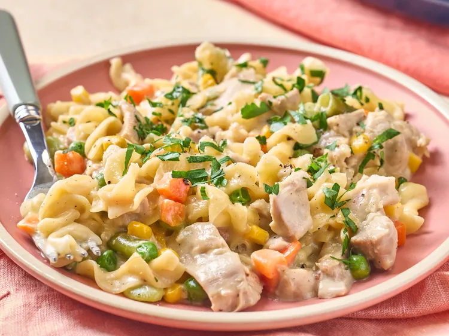

Chicken Pot Pasta
Home

An Incredible easy dish that the whole family will love.
My family has this whenever I run out of time and work was crazy and I just don't know what to make. Everyone loves me for it and it keeps my husband of prison.
Ingrdients
Chicken stock
Cream of chicken soup (condensed)
Skinless boneless chicken thighs
Garlic cloves
kosher salt
ground black pepper
Frozen mixed vegetables
Heavy Cream
Egg Noodles
Parmesan cheese
Chopped parsely
Steps
- Whisk together stock and cream of chicken in the bottom of a slow cooker. Add chicken and garlic; season with salt and pepper. Cover and cook on Low for 4 to 5 hours or on High for 2 1/2 hours.
- Remove chicken from slow cooker, and add vegetables and heavy cream. Cover and turn crockpot to High and cook 10 minutes.
- Meanwhile, chop chicken into bite-sized pieces. Return chicken to the pot and add the noodles. Stir to combine, cover, and cook on High until pasta is tender, about 30 minutes, stirring halfway through. If mixture is too thick, add more stock, a little at a time, as desired.
- Stir in 1/4 cup Parmesan cheese. Let stand, covered, for 5 to 10 minutes before serving.
- Serve topped with remaining cheese and fresh parsley.